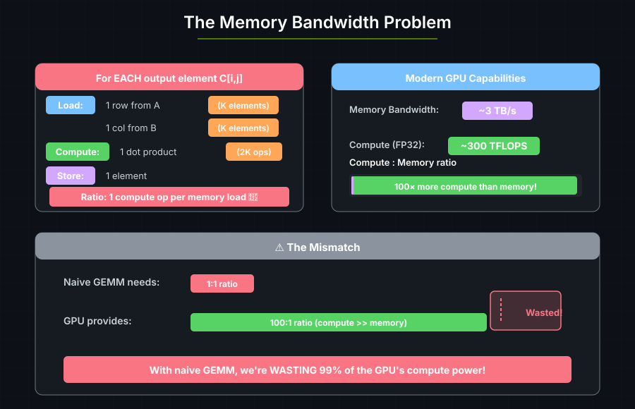
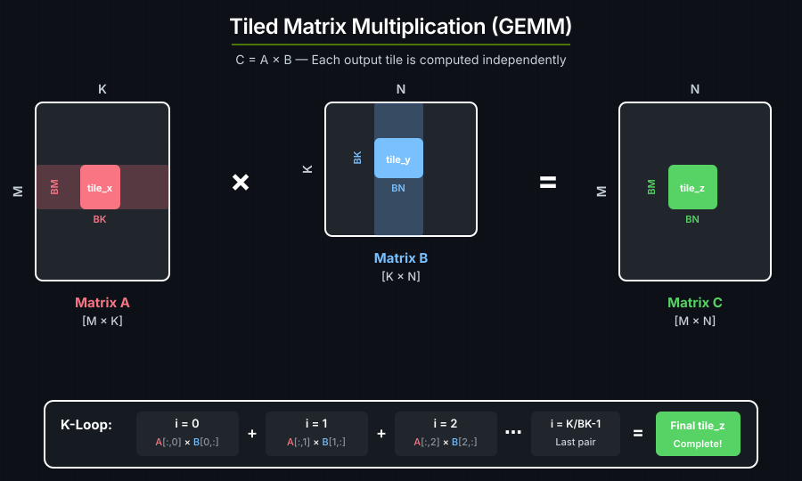
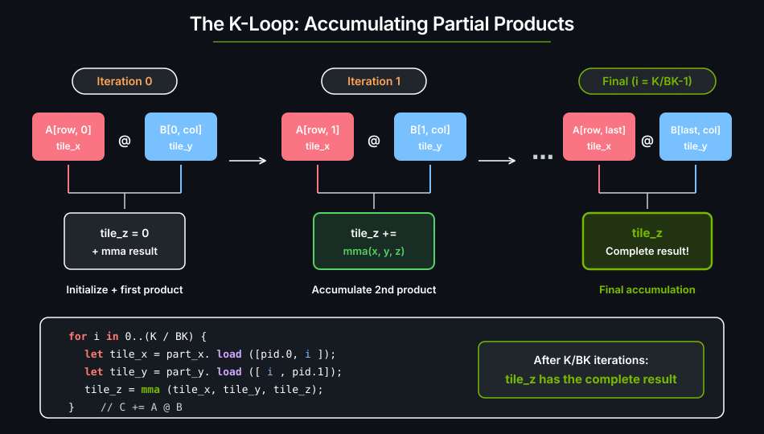
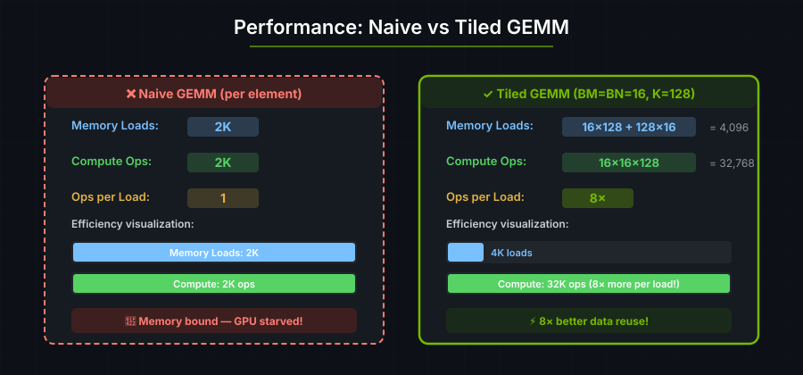

4. Matrix Multiplication#
Matrix multiplication (GEMM, or General Matrix Multiply) is used in:
Application |
Where GEMM is Used |
|---|---|
Transformers |
Attention and Fully Connected layers — 90%+ of compute |
CNNs |
Convolutions expressed as matrix multiplications |
Scientific Computing |
Simulations and solvers |
Graphics |
Transformations, lighting calculations |
Naive GEMM is Memory-Bound#
The naive algorithm for C = A × B is:
for each output element C[i,j]:
sum = 0
for k in 0..K:
sum += A[i,k] * B[k,j]
C[i,j] = sum

Each element of A and B is loaded from global memory repeatedly. To get good performance, we need to load data once and reuse it many times.
Tiled Matrix Multiplication#
Instead of computing one element at a time, we compute tiles of elements:

Per output TILE (BM × BN elements):
- Load BM × K elements from A (once per row group)
- Load K × BN elements from B (once per column group)
- Do BM × BN × K multiply-adds
Memory loads: BM×K + K×BN Compute: BM×BN×K ops
Ratio: With BM=BN=BK=16: ~16× better data reuse!
Each loaded element of A is reused BN times, and each element of B is reused BM times. This reduces global-memory traffic.
GEMM kernel#
use cuda_async::device_operation::DeviceOp;
use cuda_core::Device;
use std::sync::Arc;
use cutile;
use cutile::api;
use cutile::DType;
use cutile::error::Error;
use cutile::tensor::{IntoPartition, Tensor, ToHostVec, Unpartition};
use cutile::tile_kernel::TileKernel;
#[cutile::module]
mod my_module {
use cutile::core::*;
#[cutile::entry()]
fn gemm<E: ElementType, const BM: i32, const BN: i32, const BK: i32, const K: i32>(
z: &mut Tensor<E, { [BM, BN] }>, // Output tile
x: &Tensor<E, { [-1, K] }>, // A matrix
y: &Tensor<E, { [K, -1] }>, // B matrix
) {
let part_x = x.partition(shape![BM, BK]);
let part_y = y.partition(shape![BK, BN]);
let pid_m = program_id(0);
let pid_n = program_id(1);
let mut tile_z = load_tile_mut(z);
for i in 0i32..(K / BK) {
let tile_x = part_x.load([pid_m, i]);
let tile_y = part_y.load([i, pid_n]);
tile_z = mma(tile_x, tile_y, tile_z); // C += A @ B
}
z.store(tile_z);
}
}
use my_module::gemm;
fn main() -> Result<(), Error> {
let device = Device::new(0)?;
let stream = device.new_stream()?;
let (bm, bn, bk) = (16usize, 16usize, 8usize);
let (m, n, k) = (64usize, 64usize, 64usize);
let generics = vec![
f32::DTYPE.as_str().to_string(),
bm.to_string(), bn.to_string(), bk.to_string(), k.to_string()
];
let z = api::zeros(&[m, n]).partition([bm, bn]).sync_on(&stream)?;
let x: Arc<Tensor<f32>> = api::ones(&[m, k]).map(Into::into).sync_on(&stream)?;
let y: Arc<Tensor<f32>> = api::ones(&[k, n]).map(Into::into).sync_on(&stream)?;
let (z, _x, _y) = gemm(z, x, y).generics(generics).sync_on(&stream)?;
let z_host: Vec<f32> = z.unpartition().to_host_vec().sync_on(&stream)?;
println!("z[0] = {} (expected {})", z_host[0], k);
Ok(())
}
Output:
z[0] = 64 (expected 64)
Each output element is the dot product of a row of ones with a column of ones, which equals K. With K=64, every output element is 64.
The K-Loop#
The K-loop iterates over pairs of tiles from A and B, accumulating partial products into the output tile:
for i in 0i32..(K / BK) {
let tile_x = part_x.load([pid_m, i]); // Load A[row_group, i]
let tile_y = part_y.load([i, pid_n]); // Load B[i, col_group]
tile_z = mma(tile_x, tile_y, tile_z); // Accumulate: C += A @ B
}

The mma() Intrinsic#
mma stands for Matrix Multiply-Accumulate:
tile_z = mma(tile_x, tile_y, tile_z);
// Equivalent to: tile_z = tile_x @ tile_y + tile_z
On modern GPUs (Volta and later), this maps directly to Tensor Cores — specialized hardware that can multiply small matrices (like 16×16×16) in a single operation.
Const Generics and JIT Recompilation#
fn gemm<E: ElementType, const BM: i32, const BN: i32, const BK: i32, const K: i32>
These are const generics — values known at compile time:
Loop unrolling:
for i in 0..(K/BK)can be fully unrolled.Register allocation: The compiler knows exactly how many registers are needed.
Tensor Core mapping: The hardware requires specific tile sizes.
They are passed via .generics():
let generics = vec!["f32".to_string(), "16".to_string(), "16".to_string(), "8".to_string(), "64".to_string()];
gemm(z, x, y).generics(generics)
Changing a type parameter or const generic in the entry function signature creates a new compiled variant. The first time a variant is launched, cuTile compiles the kernel through Tile IR bytecode → cubin. The resulting binary is cached, so subsequent launches that resolve to the same variant reuse it. Launching with different generics — for example, switching from K=64 to K=128 — produces a new compilation. The full cache rules, including compile options and specialization hints, are covered in Compilation.
This is the tradeoff between static and dynamic shape dimensions. In the GEMM signature above, K is a const generic while the M and N dimensions of x and y are dynamic (-1):
x: &Tensor<E, { [-1, K] }>, // M is dynamic (-1), K is static
y: &Tensor<E, { [K, -1] }>, // K is static, N is dynamic (-1)
Static dimensions (const generics) enable aggressive optimization but trigger recompilation when they change.
Dynamic dimensions (
-1) carry no optimization benefit but can vary freely across launches without creating a new compiled variant.
As a rule, make tile sizes (BM, BN, BK) static — they are fixed for a given kernel variant and the compiler needs them for register allocation and Tensor Core mapping. Make problem dimensions that change often (such as sequence length or batch size) dynamic.

With larger tiles (like 128×128), you can achieve even better ratios, approaching the GPU's theoretical peak.
Const Generic Inference#
SAXPY needs no .generics() call: cuTile infers the const generics from the
host-side output partition.
Consider SAXPY's kernel signature:
fn saxpy<const S: [i32; 2]>(
y: &mut Tensor<f32, S>,
a: f32,
x: &Tensor<f32, { [-1, -1] }>
)
On the host side, y is a Partition<Tensor<f32>> created by calling .partition([2, 2]). The partition_shape of that Partition — [2, 2] — is used to infer S. Since S is the only const generic and it appears directly in the &mut Tensor<f32, S> parameter, cutile can infer everything it needs from the host-side types alone. No .generics() call required.
The inference rule is the same as Rust: const generics that appear in the shape of a &mut Tensor are read from the Partition's partition_shape, and const generics that appear in the shape of a &Tensor are read from the tensor's shape. Type parameters like E: ElementType are inferred from the tensor's dtype().
For GEMM, this inference is partial:
fn gemm<E: ElementType, const BM: i32, const BN: i32, const BK: i32, const K: i32>(
z: &mut Tensor<E, { [BM, BN] }>, // BM, BN inferred from z's partition_shape
x: &Tensor<E, { [-1, K] }>, // K inferred from x's shape[1]
y: &Tensor<E, { [K, -1] }>, // K also available from y's shape[0]
)
Generic |
Appears in |
Inferred from |
Inferable? |
|---|---|---|---|
|
|
|
Yes |
|
|
|
Yes |
|
|
|
Yes |
|
|
|
Yes |
|
— |
— |
No |
BM and BN are known at kernel launch time because they are embedded in the Partition created by .partition([bm, bn]). K is known because it appears as a dimension of the input tensors x and y. But BK does not appear in the type of any kernel argument — it is only used inside the kernel body when partitioning x and y into tiles:
let part_x = x.partition(shape![BM, BK]);
let part_y = y.partition(shape![BK, BN]);
The launcher cannot infer BK from a tensor or partition, so GEMM needs an
explicit .generics() call.
As a general rule: if every const generic appears somewhere in the kernel's &Tensor or &mut Tensor parameter types, inference will work and .generics() is optional. If any const generic is used only inside the kernel body (like BK), you must pass all generics explicitly.
GEMM optimization#
The GEMM kernel above is correct but does not reach the GPU's theoretical peak
(speed-of-light, or SoL) throughput. The recommended safe path is mapped
persistent GEMM: the output partition produces bounded, disjoint indices, and
the compiler derives the input bounds from the loops that produce each index.
This avoids unsafe and does not require making full tensor dimensions const
generics.
Approach 1: Mapped Persistent GEMM (Safe, Recommended)#
Mapped output partitions expose an iterator over output tile indices. The
indices are produced by the partition itself, so stores are bounded and
disjoint. The K-loop iterates 0..num_tiles(&part_x, 1) and indexes the input
partitions with plain arrays; the compiler infers the same bounds from the loop
and the mapped components, and verifies the cross-tensor ties (for example
ceil(dim(x, 1)/BK) <= ceil(dim(y, 0)/BK)) as launch checks before any GPU
work. deny_in_kernel_checks = true turns any check that would remain in the
kernel into a compile error, so the body is assert-free by construction:
#[cutile::entry(
optimization_hints = (
sm_120 = (num_cta_in_cga = 2,),
sm_100 = (num_cta_in_cga = 2,),
),
deny_in_kernel_checks = true,
)]
fn gemm_persistent<
T: ElementType,
const BM: i32,
const BN: i32,
const BK: i32,
const MAP_SHAPE: [i32; 2],
>(
mut z: MappedPartitionMut<T, { [BM, BN] }, MAP_SHAPE>,
x: &Tensor<T, { [-1, -1] }>,
y: &Tensor<T, { [-1, -1] }>,
) {
let part_x = x.partition(shape![BM, BK]);
let part_y = y.partition(shape![BK, BN]);
for out_idx in z.iter_indices() {
let (bid_m, bid_n) = out_idx.components();
let mut tile_z: Tile<T, { [BM, BN] }> = constant(T::ZERO, shape![BM, BN]);
for k_tile in 0i32..num_tiles(&part_x, 1) {
let tile_x = part_x.load([bid_m, k_tile]);
let tile_y = part_y.load([k_tile, bid_n]);
tile_z = mma(tile_x, tile_y, tile_z);
}
z.store(tile_z, out_idx);
}
}
with_bounds(...), Dim::new(...), and coord(...) from earlier versions of
this kernel are deprecated since 0.3.0; see
Bounds-Check Placement for the placement
rules.
On the host side, .map(...) selects the mapped output traversal and the launch
grid is inferred from the mapped partition:
let z = z.partition([BM, BN]).map([4, 1], num_tile_blocks);
let (z, _x, _y) = gemm_persistent(z, x, y)
.generics(generics)
.sync_on(&stream)?;
Changing the full runtime tensor dimensions does not require recompilation. Only the type-level parameters, such as tile sizes and the map shape, specialize the JIT compilation.
See cutile-examples/examples/persistent_gemm.rs for the complete example.
Approach 2: Disabling Bounds Checks (Unsafe)#
The #[cutile::entry()] attribute accepts unchecked_accesses and
optimization_hints. Setting unchecked_accesses = true disables runtime
bounds checks on all tensor loads and stores and requires an unsafe entry
point. optimization_hints supplies architecture-specific tuning parameters:
#[cutile::entry(
unchecked_accesses = true,
optimization_hints = (
sm_120 = (num_cta_in_cga = 2, max_divisibility = 16,),
)
)]
unsafe fn gemm<T: ElementType, const BM: i32, const BN: i32, const BK: i32>(
z: &mut Tensor<T, { [BM, BN] }>,
x: &Tensor<T, { [-1, -1] }>,
y: &Tensor<T, { [-1, -1] }>,
k: i32,
) {
let part_x = x.partition(shape![BM, BK]);
let part_y = y.partition(shape![BK, BN]);
let pid_m = program_id(0);
let pid_n = program_id(1);
let mut tile_z: Tile<T, { [BM, BN] }> = z.load();
for i in 0i32..(k / BK) {
let tile_x = part_x.load([pid_m, i]);
let tile_y = part_y.load([i, pid_n]);
tile_z = mma(tile_x, tile_y, tile_z);
}
z.store(tile_z);
}
This version changes three parts of the kernel:
unchecked_accesses = trueremoves bounds-checking overhead on everyloadandstorecall.sm_120 = (num_cta_in_cga = 2, max_divisibility = 16,)is an architecture-specific hint for Blackwell (SM 120) that groups two CTAs into a CGA for better inter-SM data sharing and caps auto-inferred alignment at 16.kis passed as a runtimei32rather than a const generic, so changing the K dimension does not create a new compiled variant.
The compiler still checks tile shapes, mma dimensions, and element types.
unchecked_accesses disables only runtime bounds checks.
The call site must also use an unsafe block:
unsafe {
let (z, _, _, _) = gemm(z, x, y, k as i32)
.generics(generics)
.sync_on(&stream)?;
}
See cutile-benchmarks/benches/gemm.rs for a full benchmark comparing optimized and unoptimized variants.
Approach 3: Fully Static GEMM (Safe, Legacy)#
The older safe performance path is to make all tensor dimensions static const
generics. When the compiler knows every dimension and the launch grid at JIT
time, it can prove direct program_id(axis) partition accesses are in bounds
and optimize the checks away entirely - no unsafe required:
#[cutile::entry()]
fn gemm<
E: ElementType,
const BM: i32, const BN: i32, const BK: i32,
const M: i32, const N: i32, const K: i32,
>(
z: &mut Tensor<E, { [BM, BN] }>,
x: &Tensor<E, { [M, K] }>,
y: &Tensor<E, { [K, N] }>,
) {
let part_x = x.partition(shape![BM, BK]);
let part_y = y.partition(shape![BK, BN]);
let mut tile_z = load_tile_mut(z);
let pid_m = program_id(0);
let pid_n = program_id(1);
for i in 0i32..(K / BK) {
let tile_x = part_x.load([pid_m, i]);
let tile_y = part_y.load([i, pid_n]);
tile_z = mma(tile_x, tile_y, tile_z);
}
z.store(tile_z);
}
In this version:
x: &Tensor<E, { [M, K] }>andy: &Tensor<E, { [K, N] }>— input dimensions are fully static instead of dynamic (-1). The compiler sees the exact shape of every tensor.No
unsafe, nounchecked_accesses— bounds checks are present in the source but the JIT compiler proves they are redundant and eliminates them during optimization.M,N,Kare const generics — they must be passed via.generics()at launch time, and every new combination creates a new compiled variant..const_grid(grid)— optional. The launch grid is inferred from the output partition as usual;.const_grid()additionally passes the grid as a compile-time constant, which gives the compiler exact bounds forprogram_id(axis)/num_programs(axis)and makes the grid part of the specialization key (each distinct grid is its own compiled variant). The grid is computed from the output partition (let grid = z.grid()?):
let grid = z.grid()?;
let (z, _x, _y) = gemm(z, x, y)
.const_grid(grid)
.generics(generics)
.sync_on(&stream)?;
See cutile-examples/examples/gemm_static.rs for the legacy static example.
Choosing Between the Approaches#
Mapped Persistent |
Unsafe + Hints |
Fully Static |
|
|---|---|---|---|
Safety |
Safe bounded/disjoint output iteration |
|
Safe - compiler verifies direct static accesses |
Compilation behavior |
Tile sizes and map shape create new compiled variants |
Tile sizes create new compiled variants |
Every full tensor shape creates a new compiled variant |
Flexibility |
Problem sizes can change at runtime |
Problem sizes can change at runtime |
Each new problem size is a new compilation |
Compile-time checks |
Tile shapes, types, and mapped index proofs |
Tile shapes and types still checked |
All shapes and types checked |
Best for |
Default high-performance safe GEMM |
Escape hatch for manually proven kernels |
Legacy fixed-size kernels |
Start with mapped persistent GEMM. An unsafe kernel requires a manual proof of its access pattern and is useful when that pattern cannot yet be expressed in the safe DSL. Fully static GEMM suits older kernels or a small, fixed set of tensor shapes.
Key Takeaways#
Concept |
What It Means |
|---|---|
Tiling |
Process data in blocks to maximize data reuse |
K-loop |
Iterate over tile pairs, accumulating partial results |
mma() |
Matrix multiply-accumulate, maps to Tensor Cores |
Const generics |
Tile sizes known at compile time for optimization; changing them creates a new compiled variant |
Const generic inference |
Generics appearing in |
Dynamic dimensions ( |
Can vary across launches without creating a new compiled variant |
Arithmetic intensity |
Ratio of compute to memory ops — higher is better |
Mapped output iteration |
Recommended safe performance path for persistent GEMM |
|
Disables runtime bounds checks for peak performance; requires |
Fully static shapes |
Legacy safe path that lets the compiler eliminate direct block-id bounds checks |
Exercise 1: Change Tile Sizes#
Experiment with different (BM, BN, BK) values:
Try
(32, 32, 16)— larger tiles.Try
(8, 8, 4)— smaller tiles.
Measure each configuration over multiple runs. Which is faster?
Exercise 2: Non-Square Matrices#
Modify to multiply [M, K] @ [K, N] where M ≠ N:
let (m, n, k) = (128, 256, 64); // Non-square output
Does the code need changes?
Exercise 3: Mixed Precision#
Try using f16 (half precision) for inputs and f32 for the accumulator. This is common in ML for faster compute.
See also#
Tensors and Tiles —
mmausage and the accumulate patternUseful Mental Models — 2D partitioning and grid mapping
Performance — Tensor Core usage and tile-size selection
DSL API —
mmasignature and element-type constraintsInference with NVFP4/MXFP8 — packed FP4, FP8 data, and block-scaled MMA